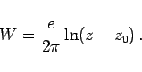
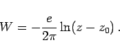

Inhalt Index DeskTop Bronstein

 Funktionentheorie Funktionen einer komplexen Veränderlichen Konforme Abbildung Komplexe Potentiale
Funktionentheorie Funktionen einer komplexen Veränderlichen Konforme Abbildung Komplexe Potentiale


Das komplexe Potential eines Feldes, das durch eine Quelle der Ergiebigkeit e > 0 im Punkt z = z0 erzeugt wird, lautet
|  | (14.25) |
Für eine Senke der gleichen Intensität gilt
|  | (14.26) |
Die Feldlinien verlaufen radial vom Punkt z = z0 aus, während die Potentiallinien konzentrische Kreise um den Punkt z0 bilden (s. Abbildung).